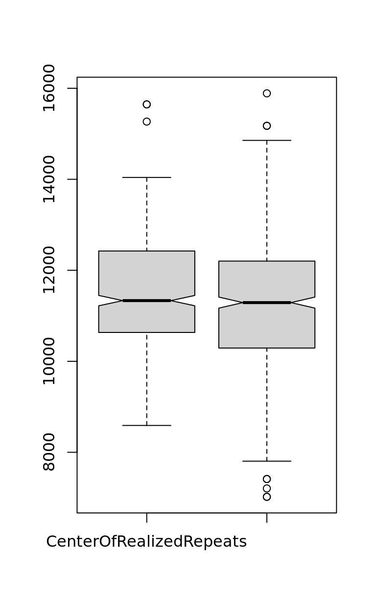
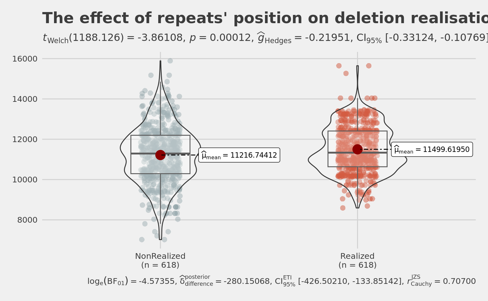
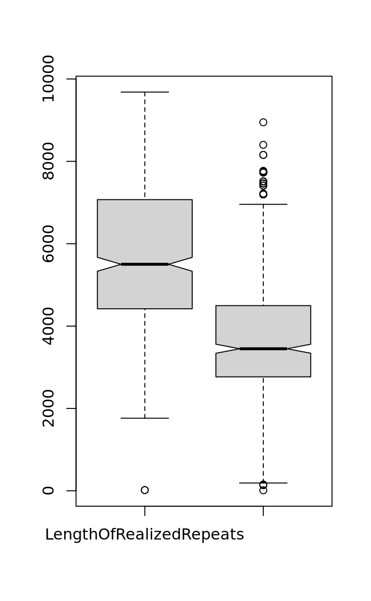
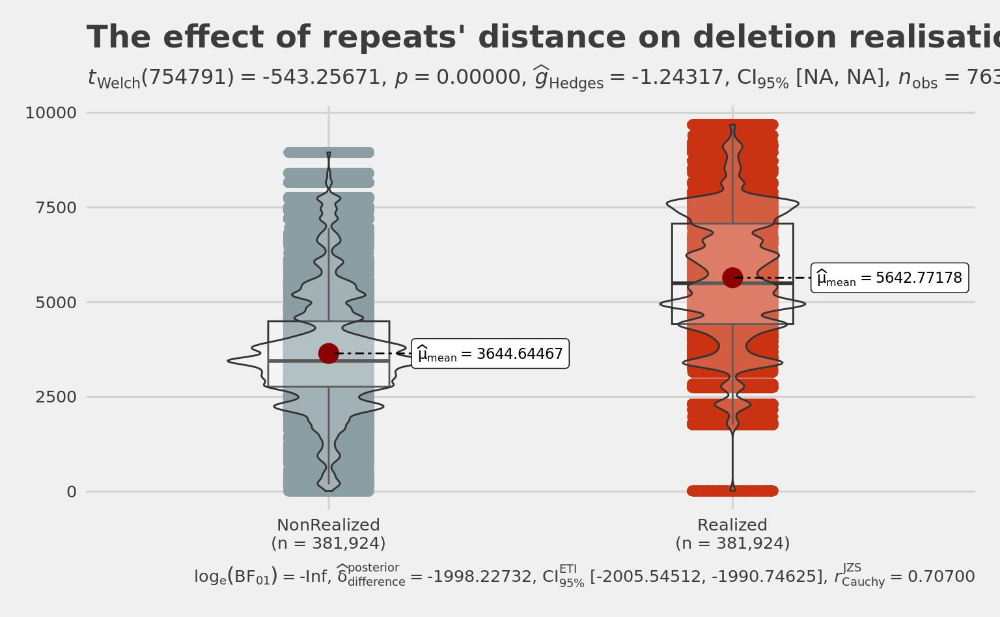
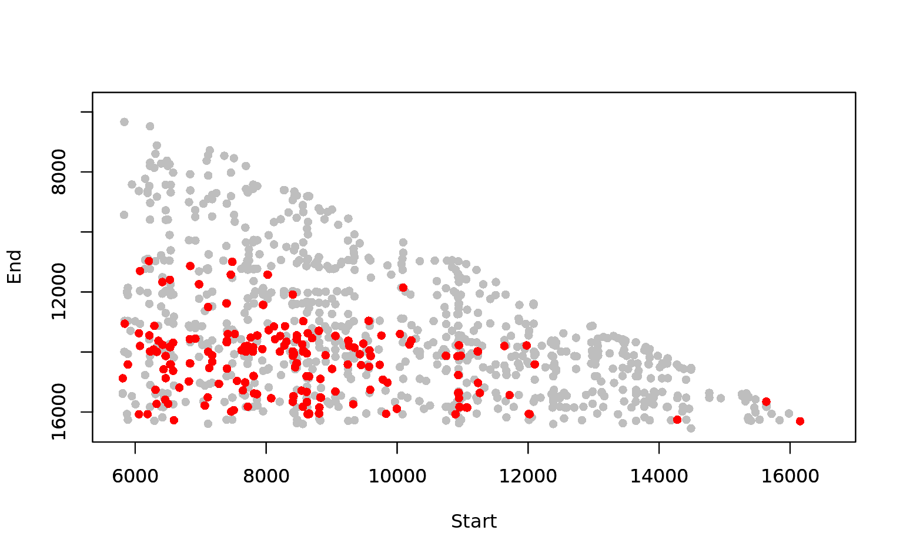
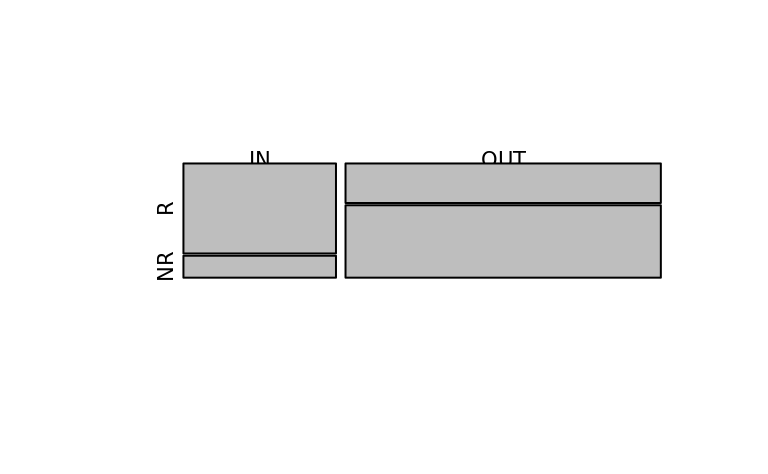
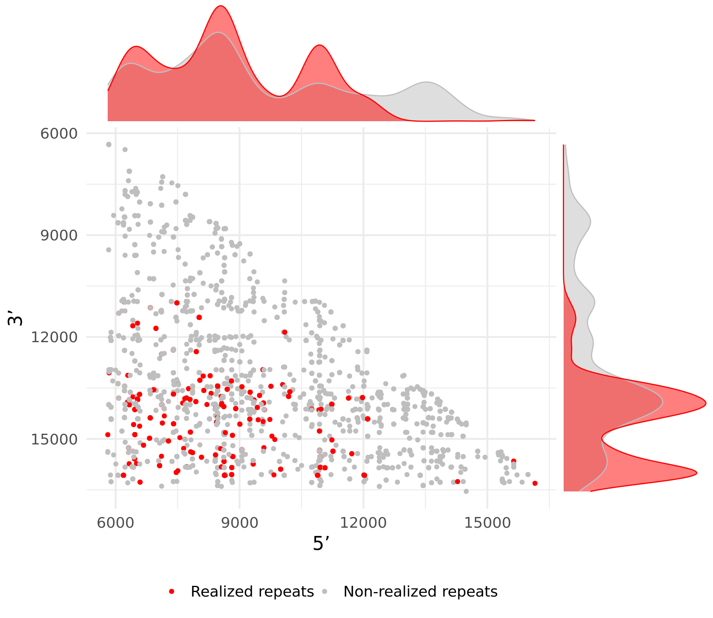

Last updated: 2023-04-05
Checks: 7 0
Knit directory: GlobalStructure/
This reproducible R Markdown analysis was created with workflowr (version 1.7.0). The Checks tab describes the reproducibility checks that were applied when the results were created. The Past versions tab lists the development history.
Great! Since the R Markdown file has been committed to the Git repository, you know the exact version of the code that produced these results.
Great job! The global environment was empty. Objects defined in the global environment can affect the analysis in your R Markdown file in unknown ways. For reproduciblity it’s best to always run the code in an empty environment.
The command set.seed(20230404) was run prior to running
the code in the R Markdown file. Setting a seed ensures that any results
that rely on randomness, e.g. subsampling or permutations, are
reproducible.
Great job! Recording the operating system, R version, and package versions is critical for reproducibility.
Nice! There were no cached chunks for this analysis, so you can be confident that you successfully produced the results during this run.
Great job! Using relative paths to the files within your workflowr project makes it easier to run your code on other machines.
Great! You are using Git for version control. Tracking code development and connecting the code version to the results is critical for reproducibility.
The results in this page were generated with repository version baf2fd4. See the Past versions tab to see a history of the changes made to the R Markdown and HTML files.
Note that you need to be careful to ensure that all relevant files for
the analysis have been committed to Git prior to generating the results
(you can use wflow_publish or
wflow_git_commit). workflowr only checks the R Markdown
file, but you know if there are other scripts or data files that it
depends on. Below is the status of the Git repository when the results
were generated:
Ignored files:
Ignored: .Rproj.user/
Ignored: 1_Raw/.DS_Store
Ignored: 2_Derived/.DS_Store
Ignored: 3_Results/.DS_Store
Ignored: renv/library/
Ignored: renv/staging/
Note that any generated files, e.g. HTML, png, CSS, etc., are not included in this status report because it is ok for generated content to have uncommitted changes.
These are the previous versions of the repository in which changes were
made to the R Markdown (analysis/figure_2b.Rmd) and HTML
(docs/figure_2b.html) files. If you’ve configured a remote
Git repository (see ?wflow_git_remote), click on the
hyperlinks in the table below to view the files as they were in that
past version.
| File | Version | Author | Date | Message |
|---|---|---|---|---|
| Rmd | baf2fd4 | Evgenii O. Tretiakov | 2023-04-05 | Start workflowr project. |
Rep <- read.table(
here(data_dir, "Homo_sapiens_triangles.txt"),
sep = "\t",
header = FALSE
)
names(Rep) <- c(
"DelStart",
"DelEnd",
"DelLength",
"MasterRepeat",
"AlternRepeats1",
"AlternRepeats2",
"AlternRepeats3",
"AlternRepeats4"
)MasterRepeat is a repeat with arms located close to given deletion breakpoints AlternativeRepeats1-4 are repeats where: first arm == arm1 of Master; first arm == arm2 of Master; second arm == arm1 of Master; second arm == arm2 of Master; mb_del == realised deletions (exist in MitoBreak); non_del - non realised deletions == don’t exist in MitoBreak
nrow(Rep)[1] 880Rep <- Rep[Rep$DelStart > 5781 &
Rep$DelStart < 16569 &
Rep$DelEnd > 5781 &
Rep$DelEnd < 16569, ]
nrow(Rep)[1] 703Rep$AllAlternRepeats <- paste(
Rep$AlternRepeats1,
Rep$AlternRepeats2,
Rep$AlternRepeats3,
Rep$AlternRepeats4,
sep = ","
)
Rep$AllAlternRepeats <- gsub("\\,\\[\\]\\,", ",", Rep$AllAlternRepeats)
Rep$AllAlternRepeats <- gsub("^\\[", "", Rep$AllAlternRepeats)
Rep$AllAlternRepeats <- gsub("\\]$", "", Rep$AllAlternRepeats)Rep$CenterOfRealizedRepeats <- 0
Rep$CenterOfNonRealizedRepeats <- 0
Rep$LengthOfRealizedRepeats <- 0
Rep$LengthOfNonRealizedRepeats <- 0
Rep$StartOfRealizedRepeats <- 0
Rep$StartOfNonRealizedRepeats <- 0
Rep$EndOfRealizedRepeats <- 0
Rep$EndOfNonRealizedRepeats <- 0
for (i in (1:nrow(Rep))) {
# i = 1
# format of data to get a dataset of master and all alternative repeats for each deletion (for each line of the dataset)
temp <- Rep[i, ]
AltRep <- unlist(strsplit(temp$AllAlternRepeats, "\\]\\,\\["))
AltRep <- AltRep[AltRep != ""]
AltRep <- data.frame(AltRep)
names(AltRep) <- c("WholeLine")
if (nrow(AltRep) > 0) {
AltRep$RepeatType <- "alternative"
AltRep$WholeLine <- as.character(AltRep$WholeLine)
MasterRepeat <- as.character(temp$MasterRepeat)
MasterRepeat <- gsub("^\\[", "", MasterRepeat)
MasterRepeat <- gsub("\\]$", "", MasterRepeat)
MasterRepeat <- paste(MasterRepeat, "mb_del", sep = " ")
MasterRepeat <- data.frame(MasterRepeat)
names(MasterRepeat) <- c("WholeLine")
MasterRepeat$RepeatType <- "master"
AllRep <- rbind(MasterRepeat, AltRep)
ReturnFifth <- function(x) {
unlist(strsplit(x, " "))[5]
}
AllRep$RealisedRepeat <- apply(as.matrix(AllRep$WholeLine), 1, FUN = ReturnFifth)
ReturnFirst <- function(x) {
as.numeric(unlist(strsplit(x, " "))[1])
}
AllRep$RepStart <- apply(as.matrix(AllRep$WholeLine), 1, FUN = ReturnFirst)
ReturnSecond <- function(x) {
as.numeric(unlist(strsplit(x, " "))[2])
}
AllRep$RepEnd <- apply(as.matrix(AllRep$WholeLine), 1, FUN = ReturnSecond)
AllRep <- AllRep[AllRep$RepStart > 5781 &
AllRep$RepStart < 16569 &
AllRep$RepEnd > 5781 &
AllRep$RepEnd < 16569, ]
if (nrow(AllRep) > 0) {
AllRep$Center <- (AllRep$RepEnd - AllRep$RepStart) / 2 + AllRep$RepStart
Rep$CenterOfRealizedRepeats[i] <- mean(AllRep[AllRep$RealisedRepeat == "mb_del", ]$Center)
Rep$CenterOfNonRealizedRepeats[i] <- mean(AllRep[AllRep$RealisedRepeat == "non_del", ]$Center)
AllRep$Length <- AllRep$RepEnd - AllRep$RepStart
Rep$LengthOfRealizedRepeats[i] <- mean(AllRep[AllRep$RealisedRepeat == "mb_del", ]$Length)
Rep$LengthOfNonRealizedRepeats[i] <- mean(AllRep[AllRep$RealisedRepeat == "non_del", ]$Length)
Rep$StartOfNonRealizedRepeats[i] <- mean(AllRep[AllRep$RealisedRepeat == "non_del", ]$RepStart)
Rep$StartOfRealizedRepeats[i] <- mean(AllRep[AllRep$RealisedRepeat == "mb_del", ]$RepStart)
Rep$EndOfNonRealizedRepeats[i] <- mean(AllRep[AllRep$RealisedRepeat == "non_del", ]$RepEnd)
Rep$EndOfRealizedRepeats[i] <- mean(AllRep[AllRep$RealisedRepeat == "mb_del", ]$RepEnd)
if (i == 1) {
FinalAllRep <- AllRep
}
if (i > 1) {
FinalAllRep <- rbind(FinalAllRep, AllRep)
}
}
}
}
nrow(Rep) # 703[1] 703Rep <- Rep[Rep$CenterOfRealizedRepeats > 0, ]
nrow(Rep) # 643[1] 643Rep <- Rep[Rep$CenterOfNonRealizedRepeats > 0, ] # it means there is at least one extra (third) arm to analyze
nrow(Rep) # 643[1] 643Rep <- Rep[!is.na(Rep$LengthOfRealizedRepeat), ] # 618
nrow(Rep)[1] 618## center is a bit higher in realized repeats
wilcox.test(Rep$CenterOfRealizedRepeats,
Rep$CenterOfNonRealizedRepeats,
paired = TRUE
) # significant
Wilcoxon signed rank test with continuity correction
data: Rep$CenterOfRealizedRepeats and Rep$CenterOfNonRealizedRepeats
V = 114853, p-value = 1.506e-05
alternative hypothesis: true location shift is not equal to 0t.test(Rep$CenterOfRealizedRepeats,
Rep$CenterOfNonRealizedRepeats,
paired = TRUE
) # significant
Paired t-test
data: Rep$CenterOfRealizedRepeats and Rep$CenterOfNonRealizedRepeats
t = 4.619, df = 617, p-value = 4.696e-06
alternative hypothesis: true mean difference is not equal to 0
95 percent confidence interval:
162.6072 403.1435
sample estimates:
mean difference
282.8754 summary(Rep$CenterOfRealizedRepeats) Min. 1st Qu. Median Mean 3rd Qu. Max.
8590 10634 11334 11500 12409 15647 summary(Rep$CenterOfNonRealizedRepeats) Min. 1st Qu. Median Mean 3rd Qu. Max.
7021 10292 11290 11217 12196 15889 boxplot(Rep$CenterOfRealizedRepeats,
Rep$CenterOfNonRealizedRepeats,
notch = TRUE,
names = c(
"CenterOfRealizedRepeats",
"CenterOfNonRealizedRepeats"
)
)
RepReal <- Rep %>%
select(
Realized = CenterOfRealizedRepeats,
NonRealized = CenterOfNonRealizedRepeats
) %>%
gather(., Realized, NonRealized,
key = "Deletion",
value = "CenterOfRepeats"
)
pltViolRepCenterRelease <- ggstatsplot::ggbetweenstats(
data = RepReal,
x = Deletion,
y = CenterOfRepeats,
notch = TRUE,
# show notched box plot
mean.ci = TRUE,
# whether to display confidence interval for means
k = 5,
# number of decimal places for statistical results
# outlier.tagging = TRUE, # whether outliers need to be tagged
# outlier.label = ContactZone, # variable to be used for the outlier tag
xlab = "Realisation of deletion",
# label for the x-axis variable
ylab = "Center of Repeats",
# label for the y-axis variable
title = "The effect of repeats' position on deletion realisation",
# title text for the plot
ggtheme = ggthemes::theme_fivethirtyeight(),
# choosing a different theme
ggstatsplot.layer = FALSE,
# turn off `ggstatsplot` theme layer
package = "wesanderson",
# package from which color palette is to be taken
palette = "Royal1",
# choosing a different color palette
messages = TRUE
)
# Note: Shapiro-Wilk Normality Test for Center of Repeats: p-value = 0.003
# Note: Bartlett's test for homogeneity of variances for factor Realisation of deletion: p-value = < 0.001
cowplot::save_plot(
plot = pltViolRepCenterRelease,
base_height = 8,
base_asp = 1.618,
file = normalizePath(
file.path(plots_dir, "violin_rep_center_release.pdf")
)
)
pltViolRepCenterRelease
## deletion is longer in realized repeats
wilcox.test(
Rep$LengthOfRealizedRepeats,
Rep$LengthOfNonRealizedRepeats,
paired = TRUE
) # significant
Wilcoxon signed rank test with continuity correction
data: Rep$LengthOfRealizedRepeats and Rep$LengthOfNonRealizedRepeats
V = 175286, p-value < 2.2e-16
alternative hypothesis: true location shift is not equal to 0t.test(
Rep$LengthOfRealizedRepeats,
Rep$LengthOfNonRealizedRepeats,
paired = TRUE
) # significant
Paired t-test
data: Rep$LengthOfRealizedRepeats and Rep$LengthOfNonRealizedRepeats
t = 24.481, df = 617, p-value < 2.2e-16
alternative hypothesis: true mean difference is not equal to 0
95 percent confidence interval:
1837.842 2158.412
sample estimates:
mean difference
1998.127 summary(Rep$LengthOfRealizedRepeats) # 5643 mean Min. 1st Qu. Median Mean 3rd Qu. Max.
18 4420 5501 5643 7066 9682 summary(Rep$LengthOfNonRealizedRepeats) # 3450 Median 3645 mean Min. 1st Qu. Median Mean 3rd Qu. Max.
12 2767 3450 3645 4489 8950 summary(Rep$LengthOfRealizedRepeats - Rep$LengthOfNonRealizedRepeats) # 1998 mean Min. 1st Qu. Median Mean 3rd Qu. Max.
-4890 585 2116 1998 3335 7416 boxplot(Rep$LengthOfRealizedRepeats,
Rep$LengthOfNonRealizedRepeats,
notch = TRUE,
names = c(
"LengthOfRealizedRepeats",
"LengthOfNonRealizedRepeats"
)
)
RepReal <-
Rep %>%
select(
Realized = LengthOfRealizedRepeats,
NonRealized = LengthOfNonRealizedRepeats
) %>%
gather(., Realized, NonRealized,
key = "Deletion",
value = "DistanceBetweenRepeats"
) %>%
full_join(., RepReal)
pltViolRepFlankLengthRelease <-
ggstatsplot::ggbetweenstats(
data = RepReal,
x = Deletion,
y = DistanceBetweenRepeats,
notch = TRUE,
# show notched box plot
mean.ci = TRUE,
# whether to display confidence interval for means
k = 5,
# number of decimal places for statistical results
# outlier.tagging = TRUE, # whether outliers need to be tagged
# outlier.label = ContactZone, # variable to be used for the outlier tag
xlab = "Realisation of deletion",
# label for the x-axis variable
ylab = "Distance between Repeats",
# label for the y-axis variable
title = "The effect of repeats' distance on deletion realisation",
# title text for the plot
ggtheme = ggthemes::theme_fivethirtyeight(),
# choosing a different theme
ggstatsplot.layer = FALSE,
# turn off `ggstatsplot` theme layer
package = "wesanderson",
# package from which color palette is to be taken
palette = "Royal1",
# choosing a different color palette
messages = TRUE
)
# Note: Bartlett's test for homogeneity of variances for factor Realisation of deletion: p-value = < 0.001
cowplot::save_plot(
plot = pltViolRepFlankLengthRelease,
base_height = 8,
base_asp = 1.618,
file = normalizePath(
file.path(plots_dir, "violin_rep_flanked_length_release.pdf")
)
)
pltViolRepFlankLengthRelease
## start and end in realized versus non-realized repeats
wilcox.test(Rep$StartOfRealizedRepeats,
Rep$StartOfNonRealizedRepeats,
paired = TRUE
) # significant
Wilcoxon signed rank test with continuity correction
data: Rep$StartOfRealizedRepeats and Rep$StartOfNonRealizedRepeats
V = 44922, p-value < 2.2e-16
alternative hypothesis: true location shift is not equal to 0t.test(Rep$StartOfRealizedRepeats,
Rep$StartOfNonRealizedRepeats,
paired = TRUE
) # significant
Paired t-test
data: Rep$StartOfRealizedRepeats and Rep$StartOfNonRealizedRepeats
t = -9.2587, df = 617, p-value < 2.2e-16
alternative hypothesis: true mean difference is not equal to 0
95 percent confidence interval:
-868.0955 -564.2809
sample estimates:
mean difference
-716.1882 summary(Rep$StartOfRealizedRepeats) # mean 8678: 25%: 7401 - 75% 9764: Min. 1st Qu. Median Mean 3rd Qu. Max.
5810 7401 8472 8678 9764 15638 quantile(Rep$StartOfRealizedRepeats, 0.1) # 6465 10%
6465 quantile(Rep$StartOfRealizedRepeats, 0.9) # 10954 90%
10954 summary(Rep$StartOfNonRealizedRepeats) # mean 9394 Min. 1st Qu. Median Mean 3rd Qu. Max.
5873 8330 9112 9394 10434 15718 summary(Rep$StartOfNonRealizedRepeats - Rep$StartOfRealizedRepeats) # mean 716 => non realised start later (~700 bp): 9394 - 8678 Min. 1st Qu. Median Mean 3rd Qu. Max.
-6137.0 -303.1 393.0 716.2 1797.4 7416.5 wilcox.test(Rep$EndOfRealizedRepeats, Rep$EndOfNonRealizedRepeats, paired = TRUE) # significant
Wilcoxon signed rank test with continuity correction
data: Rep$EndOfRealizedRepeats and Rep$EndOfNonRealizedRepeats
V = 125093, p-value < 2.2e-16
alternative hypothesis: true location shift is not equal to 0t.test(Rep$EndOfRealizedRepeats, Rep$EndOfNonRealizedRepeats, paired = TRUE) # significant
Paired t-test
data: Rep$EndOfRealizedRepeats and Rep$EndOfNonRealizedRepeats
t = 18.41, df = 617, p-value < 2.2e-16
alternative hypothesis: true mean difference is not equal to 0
95 percent confidence interval:
1145.196 1418.682
sample estimates:
mean difference
1281.939 summary(Rep$EndOfRealizedRepeats) # 14321 mean Min. 1st Qu. Median Mean 3rd Qu. Max.
10970 13696 14124 14321 15362 16274 summary(Rep$EndOfNonRealizedRepeats) # 13039 mean Min. 1st Qu. Median Mean 3rd Qu. Max.
7451 12132 13270 13039 13992 16261 summary(Rep$EndOfNonRealizedRepeats - Rep$EndOfRealizedRepeats) # mean -1281=> non realised end earlier (~1300 bp): 13039 - 14321 Min. 1st Qu. Median Mean 3rd Qu. Max.
-7334.5 -2198.6 -934.2 -1281.9 0.0 4890.0 quantile(Rep$EndOfRealizedRepeats, 0.1) # 13286 10%
13286.6 quantile(Rep$EndOfRealizedRepeats, 0.9) # 15863 90%
15863.4 plot(
FinalAllRep[FinalAllRep$RealisedRepeat == "non_del", ]$RepStart,
FinalAllRep[FinalAllRep$RealisedRepeat == "non_del", ]$RepEnd,
pch = 16,
col = "grey",
xlim = c(5781, 16569),
ylim = c(16569, 5781),
xlab = "",
ylab = ""
)
par(new = TRUE)
plot(
FinalAllRep[FinalAllRep$RealisedRepeat == "mb_del", ]$RepStart,
FinalAllRep[FinalAllRep$RealisedRepeat == "mb_del", ]$RepEnd,
pch = 16,
col = "red",
xlim = c(5781, 16569),
ylim = c(16569, 5781),
xlab = "Start",
ylab = "End"
)
# Visualise difference between density distributions of realized vs non-realized repeats.
sp <- ggplot(
FinalAllRep,
aes(
RepStart,
RepEnd
)
) +
aes(colour = RealisedRepeat) +
geom_point() +
scale_y_reverse() +
theme_minimal(17) +
xlab("5’") +
ylab("3’") +
scale_x_continuous(breaks = c(15000, 12000, 9000, 6000), position = "bottom") +
scale_color_manual(
values = c("red", "grey"),
labels = c(
"Realized repeats",
"Non-realized repeats"
)
) +
theme(
legend.position = "bottom",
legend.title = element_blank(),
legend.box = "horizontal"
)
gg_realised <-
ggExtra::ggMarginal(
sp,
type = "density",
margins = "both",
size = 3,
groupColour = TRUE,
groupFill = TRUE
)
cowplot::save_plot(here(plots_dir, "real-vs-nonreal-repeats.svg"), gg_realised, base_asp = 0.868, base_height = 7)wilcox.test(FinalAllRep[FinalAllRep$RealisedRepeat == "mb_del", ]$RepStart, FinalAllRep[FinalAllRep$RealisedRepeat == "non_del", ]$RepStart)
Wilcoxon rank sum test with continuity correction
data: FinalAllRep[FinalAllRep$RealisedRepeat == "mb_del", ]$RepStart and FinalAllRep[FinalAllRep$RealisedRepeat == "non_del", ]$RepStart
W = 1354700, p-value = 1.299e-07
alternative hypothesis: true location shift is not equal to 0wilcox.test(FinalAllRep[FinalAllRep$RealisedRepeat == "mb_del", ]$RepEnd, FinalAllRep[FinalAllRep$RealisedRepeat == "non_del", ]$RepEnd)
Wilcoxon rank sum test with continuity correction
data: FinalAllRep[FinalAllRep$RealisedRepeat == "mb_del", ]$RepEnd and FinalAllRep[FinalAllRep$RealisedRepeat == "non_del", ]$RepEnd
W = 2151564, p-value < 2.2e-16
alternative hypothesis: true location shift is not equal to 0FinalAllRep$RealisedRepeat <- as.factor(FinalAllRep$RealisedRepeat)
summary(FinalAllRep$RealisedRepeat) mb_del non_del
902 3391 StartA <- 6000 # 7000
StartB <- 9000 # 10000
EndA <- 13000
EndB <- 16000
R.In <- nrow(Rep[Rep$StartOfRealizedRepeats >= StartA &
Rep$StartOfRealizedRepeats <= StartB &
Rep$EndOfRealizedRepeats >= EndA &
Rep$EndOfRealizedRepeats <= EndB, ])
R.Out <- nrow(Rep[(Rep$StartOfRealizedRepeats < StartA |
Rep$StartOfRealizedRepeats > StartB) |
(Rep$EndOfRealizedRepeats < EndA |
Rep$EndOfRealizedRepeats > EndB), ])
R.In + R.Out # 324 + 294 = 618[1] 618NR.In <- nrow(Rep[Rep$StartOfNonRealizedRepeats >= StartA &
Rep$StartOfNonRealizedRepeats <= StartB &
Rep$EndOfNonRealizedRepeats >= EndA &
Rep$EndOfNonRealizedRepeats <= EndB, ])
NR.Out <- nrow(Rep[(Rep$StartOfNonRealizedRepeats < StartA |
Rep$StartOfNonRealizedRepeats > StartB) |
(Rep$EndOfNonRealizedRepeats < EndA |
Rep$EndOfNonRealizedRepeats > EndB), ])
NR.In + NR.Out # 79 + 598 = 618[1] 618X <- cbind(c(R.In, R.Out), c(NR.In, NR.Out))
fisher.test(X) # odds 7.5, p-value < 2.2e-16
Fisher's Exact Test for Count Data
data: X
p-value < 2.2e-16
alternative hypothesis: true odds ratio is not equal to 1
95 percent confidence interval:
5.615152 10.113074
sample estimates:
odds ratio
7.505642 Visualize it as mosaic plot
X <- data.frame(X)
names(X) <- c("R", "NR")
row.names(X) <- c("IN", "OUT")
mosaicplot(X, main = "")
gg_realised
Visualise difference between density distributions of realized vs non-realized repeats.
sessionInfo()R version 4.2.2 (2022-10-31)
Platform: x86_64-pc-linux-gnu (64-bit)
Running under: Ubuntu 22.04.1 LTS
Matrix products: default
BLAS: /usr/lib/x86_64-linux-gnu/openblas-pthread/libblas.so.3
LAPACK: /usr/lib/x86_64-linux-gnu/openblas-pthread/libopenblasp-r0.3.20.so
locale:
[1] LC_CTYPE=en_US.UTF-8 LC_NUMERIC=C
[3] LC_TIME=en_US.UTF-8 LC_COLLATE=en_US.UTF-8
[5] LC_MONETARY=en_US.UTF-8 LC_MESSAGES=en_US.UTF-8
[7] LC_PAPER=en_US.UTF-8 LC_NAME=C
[9] LC_ADDRESS=C LC_TELEPHONE=C
[11] LC_MEASUREMENT=en_US.UTF-8 LC_IDENTIFICATION=C
attached base packages:
[1] stats graphics grDevices datasets utils methods base
other attached packages:
[1] ggpubr_0.6.0 here_1.0.1 lubridate_1.9.2 forcats_1.0.0
[5] stringr_1.5.0 dplyr_1.1.1 purrr_1.0.1 readr_2.1.4
[9] tidyr_1.3.0 tibble_3.2.1 ggplot2_3.4.2 tidyverse_2.0.0
[13] workflowr_1.7.0
loaded via a namespace (and not attached):
[1] fs_1.6.1 insight_0.19.1 httr_1.4.5
[4] rprojroot_2.0.3 tools_4.2.2 backports_1.4.1
[7] bslib_0.4.2 utf8_1.2.3 R6_2.5.1
[10] statsExpressions_1.5.0 colorspace_2.1-0 withr_2.5.0
[13] tidyselect_1.2.0 processx_3.8.0 compiler_4.2.2
[16] git2r_0.31.0 textshaping_0.3.6 performance_0.10.2
[19] cli_3.6.1 prismatic_1.1.1 labeling_0.4.2
[22] bayestestR_0.13.0 sass_0.4.5 scales_1.2.1
[25] mvtnorm_1.1-3 callr_3.7.3 pbapply_1.7-0
[28] systemfonts_1.0.4 digest_0.6.31 svglite_2.1.1
[31] rmarkdown_2.21 pkgconfig_2.0.3 htmltools_0.5.5
[34] fastmap_1.1.1 highr_0.10 ggthemes_4.2.4
[37] rlang_1.1.0 rstudioapi_0.14 shiny_1.7.4
[40] farver_2.1.1 jquerylib_0.1.4 generics_0.1.3
[43] jsonlite_1.8.4 car_3.1-2 magrittr_2.0.3
[46] parameters_0.20.2 patchwork_1.1.2 Matrix_1.5-3
[49] Rcpp_1.0.10 munsell_0.5.0 fansi_1.0.4
[52] abind_1.4-5 lifecycle_1.0.3 stringi_1.7.12
[55] whisker_0.4.1 yaml_2.3.7 carData_3.0-5
[58] grid_4.2.2 paletteer_1.5.0 ggrepel_0.9.3
[61] parallel_4.2.2 promises_1.2.0.1 miniUI_0.1.1.1
[64] lattice_0.20-45 cowplot_1.1.1 hms_1.1.3
[67] zeallot_0.1.0 knitr_1.42 ps_1.7.4
[70] pillar_1.9.0 ggsignif_0.6.4 effectsize_0.8.3
[73] glue_1.6.2 evaluate_0.20 getPass_0.2-2
[76] renv_0.17.2 vctrs_0.6.1 tzdb_0.3.0
[79] httpuv_1.6.9 MatrixModels_0.5-1 gtable_0.3.3
[82] BayesFactor_0.9.12-4.4 rematch2_2.1.2 datawizard_0.7.1
[85] cachem_1.0.7 ggExtra_0.10.0 xfun_0.38
[88] mime_0.12 xtable_1.8-4 correlation_0.8.3
[91] broom_1.0.4 coda_0.19-4 rstatix_0.7.2
[94] later_1.3.0 ragg_1.2.5 ggstatsplot_0.11.0
[97] timechange_0.2.0 ellipsis_0.3.2